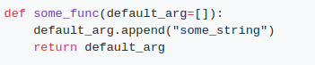

output
설명:
Python에서 함수의 기본 돌연변이 인수는 기능을 호출할 때마다 실제로 초기화되지 않는다. 대신 최근에 할당된 값이 기본값으로 사용된다. 인수로 []를 명시적으로 전달했을 때 default_arg 변수의 기본값을 사용하지 않았으므로 함수가 예상대로 반환되었다.

output
돌연변이 인수로 인한 버그를 방지하기 위한 일반적인 관행은 None을 기본값으로 지정하고 나중에 해당 인수에 해당하는 함수에 값이 전달되는지 확인하는 것이다. 예: